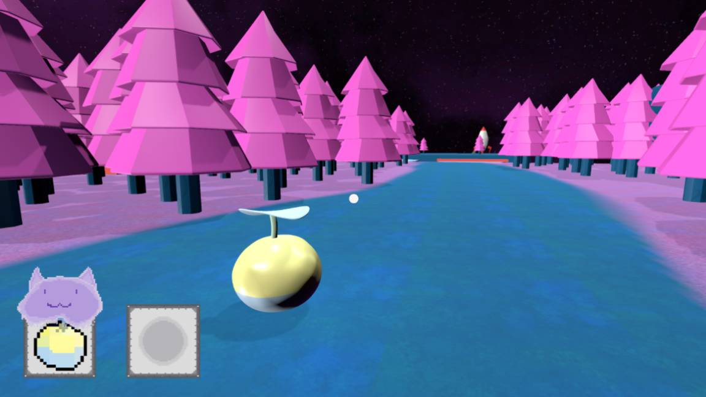

Gerbet Gorges
A game made for the Game Maker's Toolkit Game Jam in 2024 with the theme 'Built to Scale' in 96 hours.
Made in Unity, I worked with a team, sourcing sound, and having other people help with models and textures.
Playable and downloadable on Itch